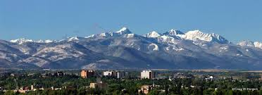

About Bozeman Montana
 Bozeman was founded in 1864 by John Bozeman.
Bozeman is located in southwestern Montana.
It is also known as the Gallatin County.
It is home to world-class fly fishing, hunting, golfing, biking, kayaking, climbing, snowboarding, rafting, skiing, hiking, camping, and other recreational opportunities.
Bozeman has a population of around 46,596 people.
Fun Facts
- The fastest growing city in Montana.
- The Sweet Pea Festival takes place every summer as it has since 1978.
- The “M” Trail, named after the landmark M was created by Montana State University Students in 1915,
- Demographis of 18 to 65 years of age: 32,565 people. 65 & Over: 3,087 people.
- Located at 45°40’40” North, 111°2’50” West (45.677890, -111.047274)
- In the past few years the Bozeman Creek Committee has been working to improve Bozeman’s urban waterway, Bozeman Creek
.